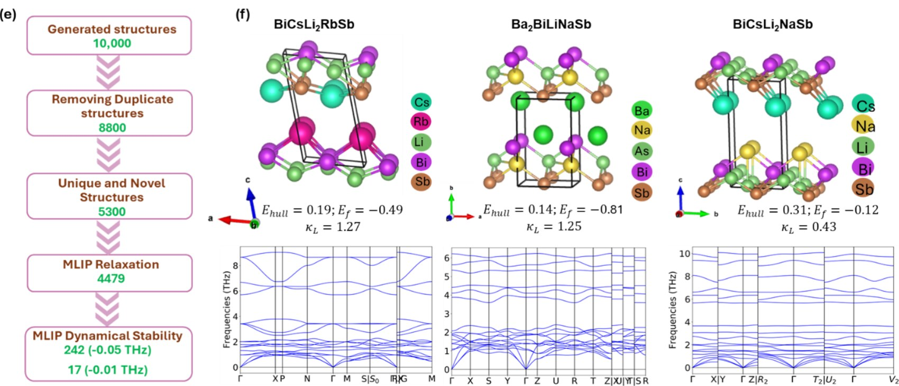
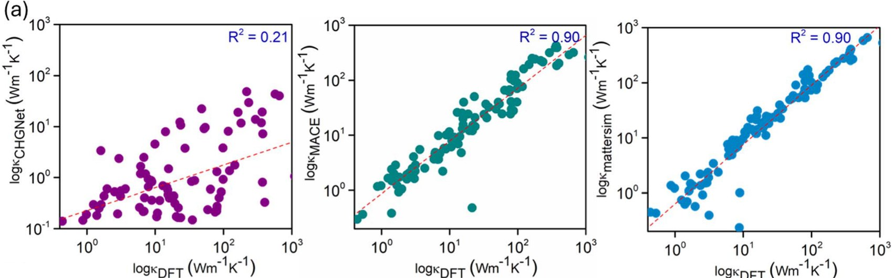
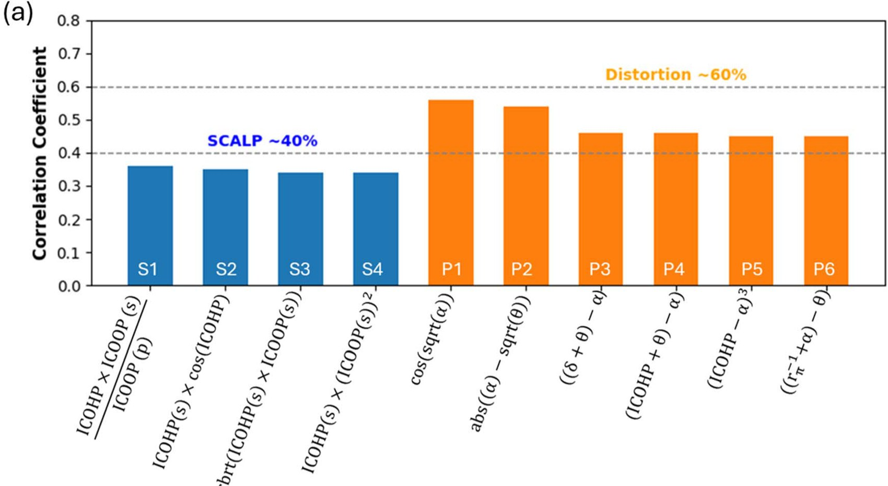
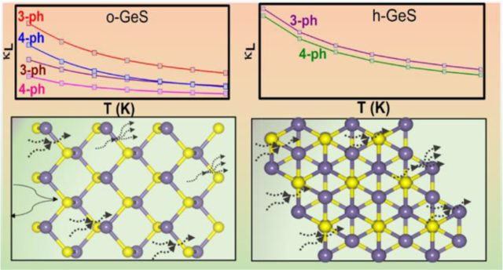
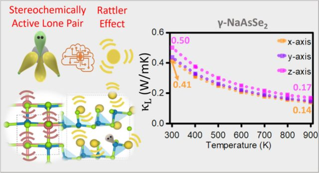
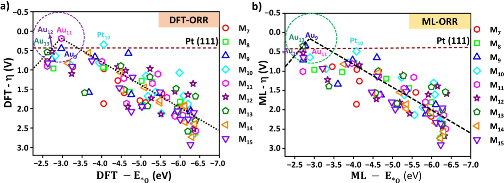

Research
My research combines electronic-structure theory with artificial intelligence to understand why materials show the properties they do, and to build machine-learning models that search materials space quickly without losing physical meaning. The work falls into the areas below.
Generative Models for Inverse Design · Machine-Learning Interatomic Potentials · Explainable Artificial Intelligence · Phonons and Thermal Transport · Thermoelectrics · Catalysis · Collaborations
1. Generative Models for Inverse Design
Known compounds cover only a small part of the space of possible materials. Generative models such as the CrystaLLM crystal language model can propose new structures, but most generated candidates are unstable or duplicates. My approach couples generation with fast and reliable filters: candidates are relaxed with machine-learning potentials, checked for duplicates and kept only if they are dynamically stable. Cross-property transfer learning and machine-learning-driven dopant design then predict the target property, which turns generation into a practical route to new functional materials.

ACS Appl. Mater. Interfaces 2026 · ACS Appl. Electron. Mater. 2024
2. Machine-Learning Interatomic Potentials
Machine-learning interatomic potentials give near-DFT accuracy at a small fraction of the cost, which makes long simulations of large and complex systems possible. My work covers the main families of these models: moment tensor potentials (MTP), equivariant and graph-network potentials such as MACE, CHGNet, M3GNet, SevenNet and TensorNet, and universal foundation potentials such as MatterSim, QET and GRACE. A central question is reliability: models trained mostly on ideal crystals are tested on defects, transition states and strongly anharmonic lattices, improved with targeted data chosen by DIRECT sampling and active learning, and distilled into fast MTP and ACE potentials. Applications range from phonons and heat transport to hydrogen and helium in refractory high-entropy alloys for fusion reactors.

J. Mater. Chem. A 2026 · J. Phys. Chem. Lett. 2025 · J. Mater. Chem. A 2024 · J. Phys.: Condens. Matter 2024 · ACS Appl. Energy Mater. 2023
3. Explainable Artificial Intelligence
A correct prediction is useful, but the reason behind it is what guides the design of the next material. Explainable machine learning links a predicted property to the underlying chemistry. Bonding descriptors from crystal orbital Hamilton population analysis, lone-pair geometry and antibonding states describe thermal materials, and electronic descriptors describe catalysts. SHAP analysis and symbolic regression then turn the learned relations into compact design rules. Bonding descriptors raised the test R² of thermal-conductivity models from 0.47 to 0.85.

Chem. Mater. 2025 · ACS Appl. Mater. Interfaces 2025 · Small 2026 · J. Phys. Chem. Lett. 2026
4. Phonons and Thermal Transport
Lattice thermal conductivity controls both the recovery of waste heat and the cooling of electronic devices. It is computed from the phonon Boltzmann transport equation with three- and four-phonon scattering, together with the coherent (Wigner) term for complex crystals, while temperature-dependent effective potentials treat strong anharmonicity. This work identifies when four-phonon scattering matters and how lone pairs, rattling atoms and antibonding states lower thermal conductivity. At the other extreme, boron nitride, boron phosphide and group-13 nitrides are studied as high-conductivity materials for thermal management.

ACS Appl. Energy Mater. 2023 · ACS Appl. Mater. Interfaces 2025 · J. Phys.: Condens. Matter 2024 · ACS Appl. Energy Mater. 2023 · J. Mater. Chem. A 2026
5. Thermoelectrics
Thermoelectric generators convert waste heat directly into electricity. Their efficiency requires low thermal conductivity together with good electronic transport. The materials studied include layered and low-dimensional chalcogenides such as γ-GeSe, Li–Cu–Ti chalcotitanates and pnictogen chalcogenides. Phonon and electronic transport are combined to predict the figure of merit zT, and machine learning is used to choose dopants. Experimental studies of glass-like thermal conductivity, for example in Pb3Bi2S6, test the predictions.

ACS Appl. Energy Mater. 2022 · J. Mater. Chem. A 2024 · J. Phys. Chem. Lett. 2025 · ACS Appl. Electron. Mater. 2024 · 1 manuscript under review
6. Catalysis
Electrocatalysts are central to green hydrogen, fuel cells, metal–air batteries and the conversion of waste molecules. Their activity is analysed with the computational hydrogen electrode, activity volcanoes and scaling relations, and machine-learning models extend this analysis over large catalyst spaces. The work is organised below by catalyst system and by reaction.

By catalyst system
Supported Pt clusters
Graphene-supported Ptn clusters treated as statistical ensembles of low-energy isomers, in gas phase and implicit solvent; machine-learned descriptors for their scaling relations.
J. Phys. Chem. C 2024 · Small 2026
Subnanometre and alloy nanoclusters
High-throughput and machine-learning screening of transition-metal and alloy nanoclusters; activity depends on cluster size and shape.
Nanoscale 2024 · ACS Appl. Mater. Interfaces 2024 · ACS Appl. Mater. Interfaces 2025
Ligand-protected Cu and Au clusters
Atomically precise Cu4, Cu14 and Au4Cu2 clusters; active sites and the effect of ligands on electronic structure.
ACS Nano 2026 · ACS Catal. 2025 · Nanoscale 2024 · 1 manuscript under review
Dual-atom catalysts
Electronic descriptors behind the scaling relations of dual-atom sites.
Layered double hydroxides
NiFe and NiMn layered double hydroxides doped with p-block metals, rare-earth ions or Ir, and In(OH)3 heterostructures.
Chem. Mater. 2026 · Adv. Funct. Mater. 2025 · Small 2025 · Small Methods 2024
Metal–organic frameworks and alloys
An iron-based metal–organic framework for a Zn–ORR/CER battery, and medium-entropy alloys for a Zn–hydrazine battery.
Energy Environ. Sci. 2026 · 1 manuscript under review
By reaction
Oxygen reduction (ORR)
Fuel-cell and metal–air cathodes.
J. Phys. Chem. C 2024 · ACS Appl. Mater. Interfaces 2024 · ACS Appl. Mater. Interfaces 2025 · Nanoscale 2024 · J. Phys. Chem. Lett. 2026 · Energy Environ. Sci. 2026 · 2 manuscripts under review
Oxygen evolution (OER) and overall water splitting
Anodes for alkaline, seawater and anion-exchange-membrane (AEM) electrolysers.
Nanoscale 2024 · ACS Appl. Mater. Interfaces 2025 · J. Phys. Chem. Lett. 2026 · Chem. Mater. 2026 · Adv. Funct. Mater. 2025 · Small 2025 · Small Methods 2024
Hydrogen evolution (HER)
Cathodes for green hydrogen.
Nanoscale 2024 · Small 2025 · Small Methods 2024 · 1 manuscript under review
Nitrate reduction (NO3RR)
Selective conversion of nitrate to ammonia.
CO2 reduction (CO2RR)
Conversion of CO2 to methane.
Battery electrocatalysis
Zn–ORR/CER and Zn–hydrazine batteries.
Energy Environ. Sci. 2026 · 1 manuscript under review
7. Collaborations
Theory is most useful when it explains and guides experiment. Collaborations with experimental groups combine synthesis and measurement with computation: reaction mechanisms and free-energy diagrams, identification of active sites, and electronic-structure analysis (density of states, charge transfer and COHP bonding) that explains the measured activity.
- Dr. Subrata Kundu, CSIR–Central Electrochemical Research Institute, Karaikudi. System: doped
NiFe and NiMn layered double hydroxides, In(OH)3–NiFe heterostructures. Application: alkaline,
seawater and AEM water electrolysis.
Chem. Mater. 2026 · Adv. Funct. Mater. 2025 · Small 2025 · Small Methods 2024
- Dr. Tharamani C. Nagaiah, IIT Ropar, with Dr. Dinesh Shetty, Khalifa University. System: iron-based
metal–organic framework; medium-entropy alloys. Application: Zn–ORR/CER and Zn–hydrazine
batteries.
Energy Environ. Sci. 2026 · 1 manuscript under review
- Prof. Thalappil Pradeep, IIT Madras, and Dr. Soumyabrata Roy. System: carborane-thiolated Cu4 clusters. Application: CO2 reduction to methane.
- Prof. Yuichi Negishi and co-workers, Japan. System: Cu14 nanoclusters. Application: selective nitrate reduction.
- Prof. Amitava Patra and co-workers. System: bimetallic Au4Cu2 clusters. Application: hydrogen evolution.
- Dr. Ananya Baksi and co-workers. System: a hydride-rich Cu14 cluster. Application: room-temperature H2 evolution. Under review.
- Dr. Emmanuel Guilmeau and co-workers, France. System: Pb3Bi2S6. Application: thermoelectrics, glass-like thermal conductivity. Under review.
- Prof. K. V. Adarsh and Prof. Thalappil Pradeep. System: a correlated material near the Mott transition. Application: charge-transfer control of electronic phases. Under review.